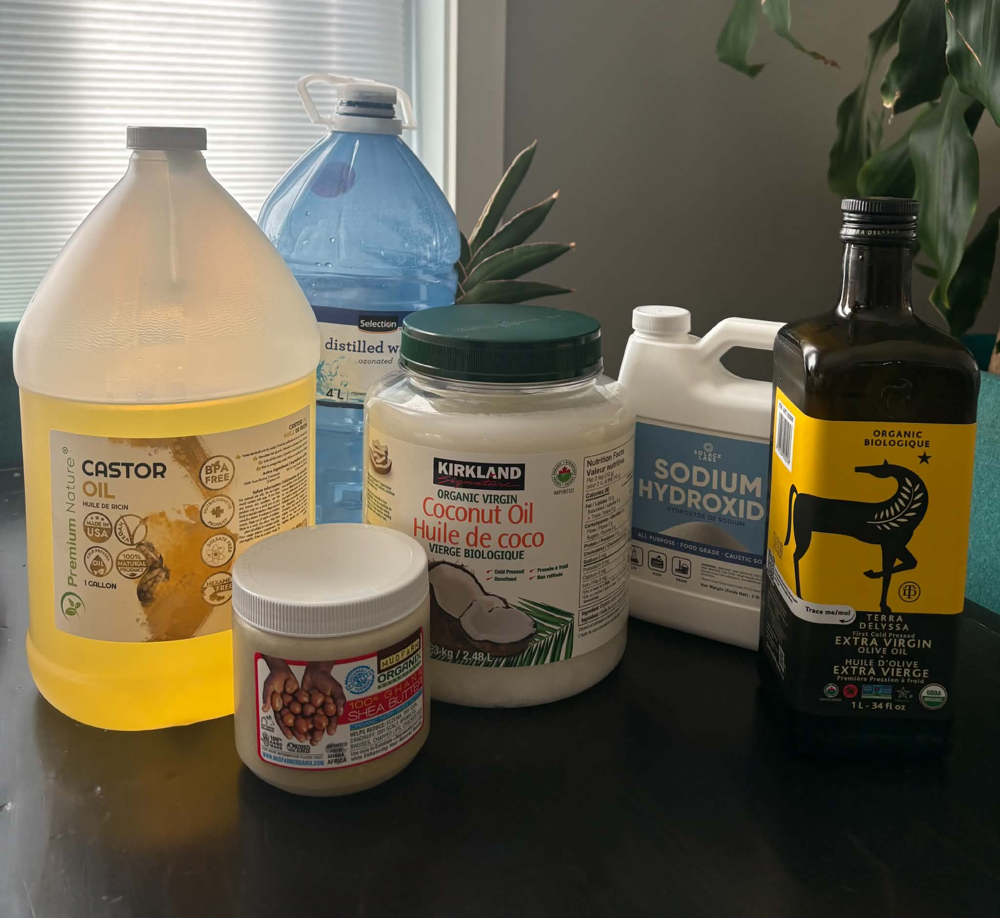
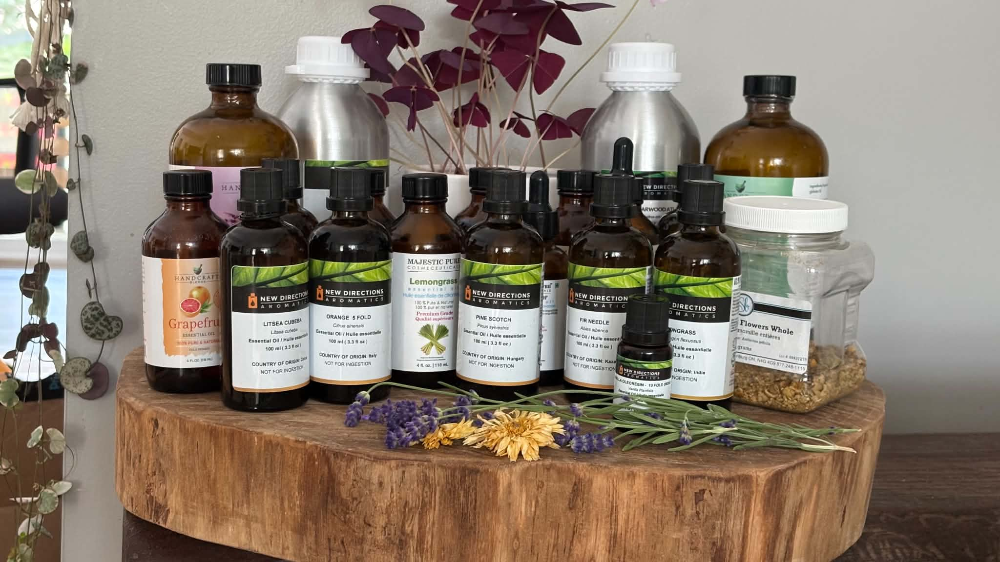
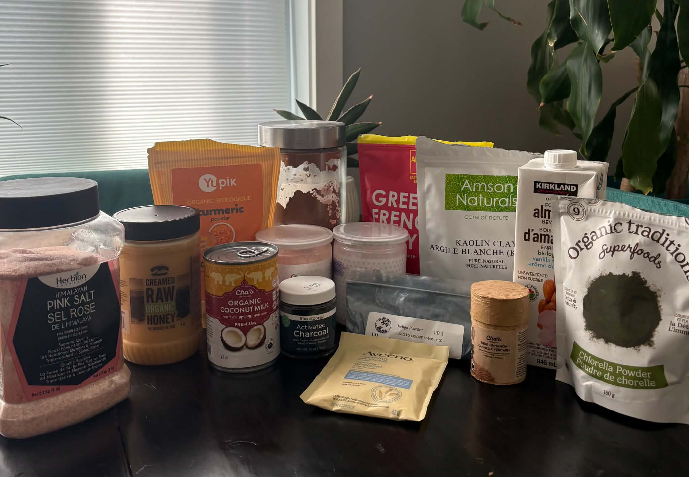

Ingredients, scents & answers
What goes into
every thoughtful batch.
Get to know the simple foundation behind our soap, the essential oils that give each bar its character, and the natural additives that create colour and texture.

The foundation
The basics
Every bar of soap starts with a simple, traditional blend of ingredients. Each one has a clear purpose.
- Organic olive oil
- Creates a gentle, conditioning lather.
- Unrefined shea butter
- Adds creaminess and helps the bar last longer.
- Organic coconut oil
- Adds cleansing power and rich foam.
- Castor oil
- Stabilizes the lather and boosts moisture.
- Distilled water & sodium hydroxide
- Allow the oils to combine and become true soap through saponification.
Lye is required to make true soap. During saponification, it fully reacts with the oils, and the water evaporates as the bar cures, leaving a safe, solid finished bar. This reaction is complete, meaning no lye remains in the final product. What starts as oils, water, and sodium hydroxide becomes something entirely new: a gentle, cleansing bar of soap and naturally occurring glycerin. By the time the soap has cured, the mixture has transformed, hardened, and neutralized, resulting in a bar that is safe, mild, and ready for use.

Pure botanical aroma
The scents
Our scented bars are made with carefully chosen steam-distilled essential oils. Citrus, herbs, flowers, woods, and resins are blended to give each product its own gentle character.
Because the aroma comes from real botanical ingredients, not synthetic fragrance oils, it may soften over time and vary slightly from one small batch to the next. Unscented options are clearly identified in their product details.

Colour, texture & character
Natural additives
These botanicals, clays, and pantry ingredients give each bar its colour, texture, aroma, and individual finish.
TurmericWarm golden colour.
Kaolin clayA gentle, silky feel.
French pink clayA soft rose tone.
French green clayMineral-rich colour and texture.
Brazilian purple clayA naturally vibrant hue.
ChlorellaA nutrient-dense green tone.
Activated charcoalA deep black finish.
Raw honeyHelps attract moisture to the skin.
Colloidal oatmealA calm, comforting addition.
Organic coconut milkAdds creaminess and silky lather.
Himalayan saltMineral-rich exfoliation and a firm bar.
Indigo powderTraditional blue and grey tones.
Cocoa powderWarm colour and subtle cocoa aroma.
CinnamonA warm tone and gentle texture.
Organic almond milkA smooth, creamy finish.
Every ingredient is selected for what it brings to the soap, not just colour, but tradition, function, texture, and character.
Good to know
Frequently asked questions
Is lye still present in finished soap?
No. Sodium hydroxide is essential to traditional soapmaking, but it is fully used during saponification. Properly formulated and cured bars do not contain active lye.
What scents do you use?
Scented products use pure essential oils selected to create botanical citrus, floral, herbal, minty, woody, or resinous blends. We do not use synthetic fragrance oils.
Why do bars vary in colour and pattern?
Each batch is poured and cut by hand. Natural clays, botanical powders, and small variations in the process mean the colour and pattern may differ slightly from the product photo.
Are the colours synthetic?
Our soap colours come from ingredients such as clays, indigo, turmeric, chlorella, cocoa, charcoal, and madder root. Check each product page for its exact ingredient list.
How should I store a handmade bar?
Let the bar dry between uses on a draining soap dish and keep it away from standing water. A dry bar lasts longer.
Are products made in small batches?
Yes. Products are handcrafted in limited quantities, so availability and small visual details can change from batch to batch.